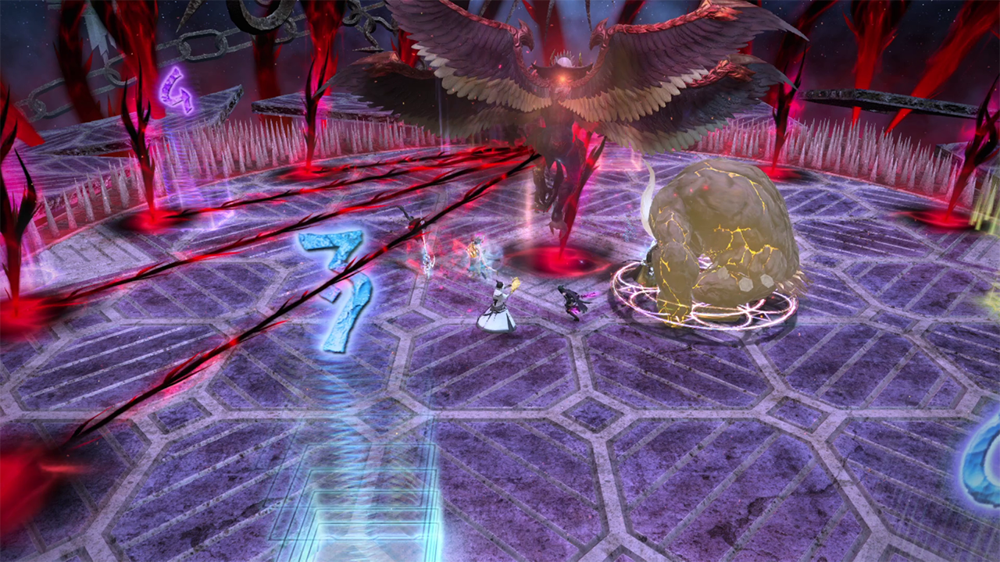

Asphodelos: The Fourth Circle (Savage) is a high-end duty added in patch 6.05.
The fight can be unlocked by speaking to Nemjiji in Labyrinthos (8.4, 27.4) after completing Asphodelos: The Fourth Circle.
The minimum ilvl required to enter this fight is 580.
Hesperos's Abilities
Searing Stream: A heavy raidwide attack.
Nearsight: Two AOEs that target the two closest players.
Farsight: Two AOEs that target the two farthest players.
Demigod Double: An AOE tankbuster that must be shared by two tanks. One tank can take it with their invulnerability.
Phase 2 is split into 6 big mechanics: Act 1, Act 2, Act 3, Act 4, Finale, and Curtain Call. The toolboxes created by Zetherea Maxwell are very helpful, and I will be linking them throughout the guide.
Hesperos will telegraph eight towers and four large AOEs, then place a thorn over them to hide them.
After a Searing Stream raidwide, Hesperos will cast Wreath of Thorns and tether to the thorns in the order they will be resolved. The order is two N/S or E/W AOEs, the eight towers, then the
last two E/W or N/S AOEs. If he tethers to the N/S thorns first, have the party be E/W to avoid them, and vice versa if he tethers to the E/W thorns first. After the first explosion, take your intercard
towers. After the towers are resolved, keep moving to the next cardinal to dodge the remaining two AOEs.
After the thorns resolve, Hesperos will cast Nearsight or Farsight. Ensure that the tanks are the two closest or two farthest players to take the AOEs.
Here is a video example where Hesperos tethers E/W then N/S.
Hesperos will spawn a tower and an AOE at each cardinal, with the tower on the left and the AOE on the right (looking at the wall from the center of the field). Then he will cover them up with
Wreath of Thorns. He will tether to two towers at opposite cardinals, then two AOEs at opposite cardinals. Then he will tether to the two other AOEs and towers. The opposingcardinals that have their
tower tethered first (the left thorn) are the safe cardinals you want to go to first.
When Wreath of Thorns finishes casting, orbs will spawn on top of every player (except one tank) and all players will be tethered in role pairs.
One healer + one tank will be tethered, with the healer having a purple orb and the tank having nothing.
One healer + one tank will be tethered, with both players having fire orbs over them.
One DPS + one DPS will be tethered, with both players having wind orbs over them.
One DPS + one DPS will be tethered, with both players having fire orbs over them.
When players with a purple orb stretch their tether, everyone will take light raidwide damage and get a 2 second Magic Vulnerability debuff.
When players with a fire orb stretch their tether, a stack AOE will detonate on each of them. Two other players need to stack with each fire tether stretcher for a total of three people in the stack.
I use a priority system for PF and mark all DPS 1-4, and the DPS with the lower number goes clockwise while the DPS with the higher number goes counterclockwise.
Players with wind orbs should not stretch their tether, or they will die.
To resolve this mechanic, everyone except the purple healer and the nothing tank should stack in the center. The purple supports should stretch their tether as soon as possible for the Magic Vulnerability to
apply and fall off before fire stacks need to happen. Hesperos will cast Dark Design, and when the cast finishes, AOEs will be baited at everyone's position, hence why we want most of the party to
stack at the center. When the AOEs are baited, everyone will move.
For the first movement, where players go will depend on their orb and whether the safe cardinals are N/S or E/W.
The nothing tank should move North or West to stretch, then take a tower after the tether breaks.
The purple healer should move South or East to stretch, then take a tower after the tether breaks.
The fire tank should move South or East to stretch their tether.
The fire healer should move North or West to stretch their tether.
The two fire DPSes should move together South or East and stack on the fire tank who is stretching.
The two wind DPSes should move together North or West and stack on the fire healer who is stretching.
After the support fire stacks resolve and the first two towers are soaked, the second movement will happen.
The nothing tank should move counterclockwise to soak the DPS's fire with the other tank.
The purple healer should move clockwise to take a tower.
The fire tank should move clockwise to soak the DPS's fire with the other tank.
The fire healer should move clockwise to take a tower.
The two fire DPSes should split, with one going clockwise and the other going counterclockwise in order to stretch their tether.
The two wind DPSes should move together clockwise to soak the DPS's fire.
After the last towers are taken, the wind tether will expire and resolve harmlessly.
After a time, Hesperos will cast Ultimate Impulse, which is deals heavy raidwide damage. The damage is lethal if thorns or tethers are left unresolved.
Here is a video example where Hesperos tethers the left towers on N/S first and the healer has a purple orb.
Hesperos will telegraph eight towers (four on the left, four on the right) and a knockback that comes from the center of the field. He will then cover them with Wreath of Thorns and tether
to four towers, then to the knockback, then to another four towers.
Hesperos will cast Kothornos Kick and jump to the farthest player and do an AOE, inflicting a Magic Vulnerability debuff. Anyone else hit by the AOE will be knocked back into the kill wall,
so give them space. After Kothornos Kick, Hesperos will do three conal cleaves that target the closest three players, inflicting a Magic Vulnerability debuff. The kick baiter cannot take
a conal cleave, since they already have Magic Vulnerability. As soon as they bait the kick, they should move towards the center to avoid the three cleaves.
The kick baiter and the three conal baiters should go towards the towers being resolved second, that way four other players can take the first set of towers without worrying about kicks and conal cleaves.
After the first towers and triple conal cleaves go off, the knockback will happen. The first tower group can use their knockback invuln after their tower goes off, while the second tower group can use
their knockback invuln after the triple conal cleaves go off.
After the knockback, the first tower group should have one player bait another Kothornos Kick to the opposite side of the field (where the first towers resolved). Like before, three other
players will bait triple conal cleaves. The second tower group will take their four towers while this is happening.

Heart Stake
After all eight towers finish going off, there will be a Nearsight or Farsight, followed by Heart Stake. Heart Stake will attack the two players with the highest
and second highest aggro and apply a DoT, one at a time. One tank can take it with their invulnerability by having the off tank Provoke after the main tank is hit.
Hesperos will spawn four towers and four AOEs around the field. Either all towers will be on cardinals and the AOEs on intercards, or vice versa.
After he telegraphs the towers and AOEs, he will use a Searing Stream raidwide. Then he will use Wreath of Thorns to tether everyone to a thorn on the edge of the field. Four
players will have purple orbs, which means they are tethered to a tower that will explode with an AOE when stretched, and four players will have blue orbs, which will detonate a tower that must be soaked
when stretched.
Players with purple orbs should go one spot clockwise of the thorn they are tethered to.
Players with blue orbs should go directly across the field from the thorn they are tethered to, then one spot clockwise.
Position on the edge of the boss's hitbox with your eyes on the thorn you have to take. A second Searing Stream will go off, then you should walk on top of your thorn.
If done correctly, blue orb players will stretch their tether and detonate their tower, and purple orb players will soak the towers.
After this, the party should go South and the purple orb player who is tethered to the N or NW thorn should stretch it. This will detonate the tower and do a large AOE centered on it,
and everyone will get a Magic Vulnerability debuff for a few seconds. The party should move around the edge of the field clockwise, with purple orb players stretching their tethers one at a time,
ensuring that they do not stretch while the Magic Vulnerability is still active. After a time, Hesperos will cast Ultimate Impulse to check if all tethers have been resolved.
Hesperos will spawn eight towers and hide them under thorns. After a few seconds, he will spawn two thorns, each on the opposite side of the field. Each role will be wind orb tethered to one thorn.
Players must spread out to avoid incoming spread AOEs, but they can't be too far or they will stretch the wind tether and die. Have tanks and melees be close to the boss and healers and ranged be in the
back. Hesperos will cast Fleeting Impulse and do eight spread AOEs one at a time. Keep track of which hit you took, as it will affect which tower you take in a moment.
After Fleeting Impulse finishes, he will tether to a random tower and start tethering to the towers clockwise of it. People should take the tower that lines up with the number spread they took.
So, the person who got hit with the first spread should go to the first tower that was tethered, and the sixth person who got hit should take the sixth tower.
Hesperos will spawn eight thorns and have players tether to them, placing purple orbs over their heads. Everyone will have a timer debuff that will detonate their thorn when it expires, or when
their tether is stretched. Detonating a thorn does moderate raidwide damage and inflicts a Magic Vulnerability debuff for 2 seconds. Detonating a thorn while the Magic Vulnerability debuff is
active will wipe the party. The debuff timers are as follows.
One support + one DPS will have a 12 second timer.
One support + one DPS will have a 22 second timer.
One support + one DPS will have a 32 second timer.
One support + one DPS will have a 42 second timer.
The strategy is that DPS should stretch their tether when their debuff is at 12 seconds, and supports should stretch their debuff when their timer is at 6 seconds.
While players are resolving their tether, Hesperos will do two Hell's Sting attacks, which do telegraphed conal cleaves followed by untelegraphed cleaves hitting wherever was not hit the
first time. Avoid the mechanic by dodging the first telegraphed cleave and moving into it after it goes off.
Hesperos will do an Ultimate Impulse to check if all towers have been resolved, then loop the mechanic one more time. Another set of thorns with timer debuffs, two Hell's Sting
throughout the mechanic, an Ultimate Impulse at the end, then one final Ultimate Impulse serving as enrage.
 The nothing tank should move North or West to stretch, then take a tower after the tether breaks.
The nothing tank should move North or West to stretch, then take a tower after the tether breaks. The two fire DPSes should move together South or East and stack on the fire tank who is stretching.
The two fire DPSes should move together South or East and stack on the fire tank who is stretching.